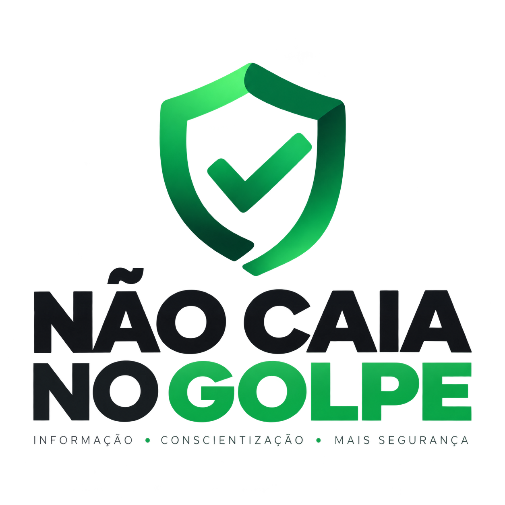

Golpista conta com a sua pressa. A gente te ensina a desconfiar.
Clone de WhatsApp, falsa central do banco, Pix por engano, deepfake. Explicamos em linguagem simples como cada golpe funciona e o que fazer para não cair nele.
Pare. Confira. Só depois aja.
Quase todo golpe digital tenta te fazer agir antes de pensar. Três hábitos simples desarmam a maioria deles.
Pare
Urgência, medo ou oferta boa demais são o gatilho do golpe. Respire antes de clicar, pagar ou responder.Confira
Fale com a pessoa ou empresa por um canal que você conhece: app oficial, número salvo, site digitado à mão.Nunca informe
Senha, token, código SMS ou dados do cartão não se passam a ninguém. Banco nenhum pede isso.Os golpes mais comuns no Brasil
Entenda como cada um funciona, quais sinais aparecem e como se proteger.
WhatsApp clonado e falso parente
Alguém usa a foto de um conhecido e pede dinheiro com urgência.
Ler guia →Falsa central do banco
"Detectamos uma compra suspeita…" e o golpista pede seus dados.
Ler guia →Golpes do Pix
Pix "por engano", QR Code adulterado e comprovante falso.
Ler guia →Phishing: links e e-mails falsos
Mensagens que imitam bancos, Correios e órgãos públicos.
Ler guia →Lojas e anúncios falsos
Preço muito baixo, só Pix e o produto nunca chega.
Ler guia →Deepfake
Vídeos e áudios falsos criados com inteligência artificial.
Ler guia →Se apareceu algum destes, desconfie
- Urgência: "tem que ser agora", "sua conta será bloqueada hoje".
- Número ou perfil novo de alguém que você já conhece.
- Pedido de código, senha ou token, por qualquer canal.
- Link encurtado ou endereço com letras trocadas (bancco, correios-entrega…).
- Pagamento só por Pix para pessoa física em nome diferente.
- Oferta boa demais: preço muito abaixo do mercado ou prêmio que você não disputou.
- Pedido de segredo: "não conta pra ninguém", "não fala com o gerente".
- Pedido para instalar um app ou "acesso remoto" para resolver um problema.
É golpe ou não?
Seis situações reais. Veja se você identifica o golpe antes de cair nele.
Caí num golpe. E agora?
Agir rápido aumenta muito a chance de recuperar o dinheiro e evitar novos prejuízos. Siga esta ordem.
- Avise o seu banco imediatamenteUse o app ou o número no verso do cartão. Peça o bloqueio e, se foi Pix, a abertura do MED (Mecanismo Especial de Devolução).
- Troque senhas e ative a verificação em duas etapasNo WhatsApp: Configurações › Conta › Confirmação em duas etapas. Faça o mesmo no e-mail e nas redes sociais.
- Guarde as provasPrints das conversas, números, perfis, comprovantes e links. Não apague nada.
- Registre um boletim de ocorrênciaPode ser pela delegacia eletrônica do seu estado. O B.O. é necessário para contestações e para o banco.
- Avise seus contatosSe sua conta foi clonada, publique um aviso pedindo que ninguém faça transferências em seu nome.
- Monitore seu CPFConsulte o Registrato do Banco Central para ver contas e empréstimos abertos em seu nome.
Colaborador treinado é a melhor defesa
Boa parte dos ataques a empresas começa com um e-mail falso, uma ligação se passando por fornecedor ou um boleto adulterado. Estamos preparando programas para levar conscientização ao seu time.
- Palestras de conscientização sobre golpes digitais
- Treinamentos práticos com simulações de phishing
- Materiais prontos para comunicação interna
- Parcerias para campanhas educativas
Em breve
Quer ser avisado quando os programas para empresas estiverem disponíveis ou propor uma parceria?
Quero saber maisNosso objetivo é te preparar para identificar e escapar de golpes
O Não Caia no Golpe é um projeto de educação em segurança digital. Os golpes mudam o tempo todo, mas a lógica por trás deles se repete: pressa, medo e confiança mal colocada.
Explicamos tanto o lado técnico quanto o comportamental de cada golpe. Quanto mais gente souber reconhecer os sinais, menos golpes dão certo, em casa e no trabalho.

Recebeu uma mensagem suspeita? Tem uma sugestão de matéria?
Escreva para a gente. Lemos todas as mensagens e usamos os casos (sem identificar ninguém) para criar novos alertas.
contato@naocaianogolpe.com.brNunca pedimos senhas, códigos ou dados bancários.